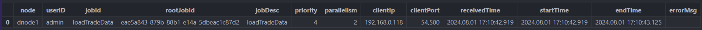
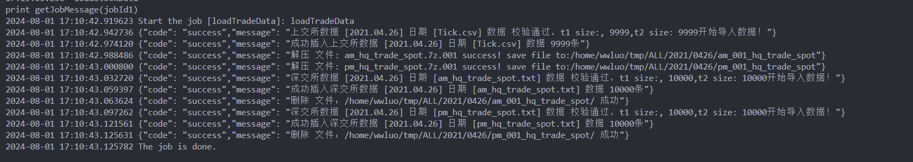
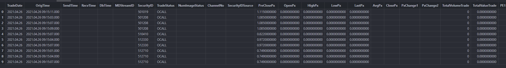

ExchData 交易所历史股票数据自动化导入功能模块使用教程
在部署完 DolphinDB 后，需要将历史股票数据批量导入数据库，再进行数据查询、计算和分析等操作。为便于用户快速导入交易所 Level-2 历史行情数据，DolphinDB 开发了 ExchData 模块，主要用于沪深交易所 Level-2 行情原始数据的自动化导入，目前已支持的数据源包括：
- 沪深 Level-2 快照行情
- 沪深逐笔委托
- 沪深逐笔成交
- 上交所逐笔合并
注意：本教程代码基于 DolphinDB 2.00.11.3 开发，建议用户使用 2.00.11.3 及以上版本 。
1. 模块介绍
ExchData 模块主要包含预加载数据表结构、创建数据库及分区表、导入数据三部分。
1.1 数据表结构
schema 文件夹下的模块是根据本文第二章节中的合并规则整理的数据结构。该文件夹按照数据源格式，包含以下几个模块文件：
- tradeSchema 用于指定逐笔成交数据存入数据库的数据格式以及 DolphinDB 读取 CSV 文件时的数据格式。
- orderSchema 用于指定逐笔委托数据存入数据库的数据格式以及 DolphinDB 读取 CSV 文件时的数据格式。
- snapshotSchema 用于指定 Level-2 快照行情数据存入数据库的数据格式以及 DolphinDB 读取 CSV 文件时的数据格式。
- tradeOrderSchema 用于 DolphinDB 读取上交所逐笔合并数据的 CSV 文件时的数据格式。
1.2 创建数据库和分区表
数据库和分区表创建可参考 createTB.dos，其用于创建存储交易所数据的分布式库表。根据业务需求，这里对沪深股票 Level-2 高频行情数据采用一库三表的建库建表方案，分区方案如下：
表 1-1 分区方案
| 表名 | 分区方案 | 分区列 | 排序列 |
|---|---|---|---|
| trade | 时间维度按天分区+交易所 VALUE 分区 + 证券代码维度 HASH 25分区 | TradeDate、Market、SecurityID | SecurityID 和 TradeTime |
| order | 时间维度按天分区 +交易所 VALUE 分区+ 证券代码维度 HASH 25分区 | TradeDate、Market、SecurityID | SecurityID 和 OrderTime |
| snapshot | 时间维度按天分区+交易所 VALUE 分区+ 证券代码维度 HASH 25分区 | TradeDate、Market、 SecurityID | SecurityID 和 OrigTime |
1.3 数据导入
数据导入部分涉及 ExchData 文件夹和 ExchData.dos，作用如下：
- ExchData 包含了 Order.dos 、Snapshot.dos、Trade.dos、TradeOrder.dos 三个模块文件，分别用于导入沪深交易所的逐笔委托、行情快照和逐笔成交 Level-2 高频行情数据。
- ExchData.dos 用于导入指定目录下的所有交易所数据，是对前面所有模块的整合。
下面列出模块中的主要函数 ExchData 的语法和参数介绍。
语法
ExchData(dbName, tbNames, filePath, startDate, endDate, dataTypes, market="ALL", tmpPath=NULL, rowCount=1000000, deleteDuplicate=true, initialTB=false, initialDB=false)
详情
将 fileDir 路径下从 startDate 到 endDate 日期的 dataSource 数据导入 dbName 数据库中的 tableName 表里。
参数
dbName 字符串，数据库名称。
tbNames 字符串型的向量，分布式表名称。若需要导入逐笔合并数据，需要传入如 [“Order”, “Trade”] 的逐笔成交和逐笔委托表名；若需要导入其他行情数据，只需要传入导入的单一表名即可。
filePath 字符串，指定的存放数据的路径，需要确保和第一章的文件结构一致。
startDate 字符串，导入数据的起始日期，比如 2022.01.01(包括这一天)。默认值为 NULL，此时从上一个交易日开始导入。
endDate 字符串，导入数据的结束日期，比如 2022.12.31(包括这一天)。默认值为 NULL，此时从上一个交易日开始导入。
dataTypes 字符串型的向量，导入行情的数据源类型， “Snapshot”, “Order”, “Trade” 三选一或者 [“Order”, “Trade”]。
market 字符串，交易所，目前只能 “ALL”, “SZ”, “SH” 三选一。当 market=“ALL” 时，会将沪深的数据全部导入一张名为 tableName 的分布式表；否则，会只导入一个交易所的数据。
tmpPath 字符串，指定的临时文件存放路径，用于存放解压后的深交所的中间文件，解压后会将解压的临时文件删除。默认为 NULL，此时不会去解压缩，并基于指定的文件夹去识别数据文件导入数据。
rowCount 整数，分段写入的最高数据量。指定后会对 CSV 数据分段写入分布式库表。默认值为 0，此时全量导入数据。
deleteDuplicate 布尔值，表示是否需要删除数据库已导入的数据。默认值为 true，此时导入数据前不会删除库表中已存在的数据。
initialDB 布尔值，是否需要初始化数据库。如果已经存在名为 dbName 的数据库，当 initialDB=true 时，会删除原来的数据库并重新创建；否则会保留原来的数据库并输出 "[dbName] 数据库已经存在" 的提示。
initialTB 布尔值，是否需要初始化分布式表。如果在 dbName 数据库下已经存在名为 tbName 的表，当 initialTB=true 时，会删除原来的表并重新创建；否则会保留原来的表并输出 "数据库 [dbName] 已经存在表 [tbName]" 的提示。
2. 历史股票数据文件结构
在使用本功能模块时，需要准备解压缩后的历史股票数据文件（未解压缩的文件结构见附件），并确保在主目录下创建了对应的文件目录，不同时间段下（见第二章不同数据源的文件说明）的文件结构如下,假设最上层文件夹为 Data 文件夹，Data 文件夹下存放对应上交所（SH）、深交所（SZ）的交易所股票行情原始数据。
Data
└──SH
| ├── 2015
| │ └── 20150105
| │ ├── Entrust.csv
| │ ├── Snapshot.csv
| │ └── Tick.csv
| | ……
| ├── 2020
| │ └── 20200104
| │ ├── Entrust.csv
| │ ├── Snapshot.csv
| │ └── Tick.csv
| | ……
| └── 2023
| └── 20231205
| ├── Snapshot.csv
| └── StockTick.csv
| ……
└──SZ
├── 2016
│ └── 0506
│ │ ├── SZL2_ORDER_20160506.TXT
│ │ ├── SZL2_SNAPSHOT_20160506.TXT
│ │ ├── SZL2_SNAPSHOTDW_20160506.TXT
│ │ └── SZL2_TRADE_20160506.TXT
│ └── 0509
│ ├── am_hq_order_spot.txt
│ ├── am_hq_snap_spot.txt
│ ├── am_hq_trade_spot.txt
│ ├── am_snap_level_spot.txt
│ ├── pm_hq_order_spot.txt
│ └── pm_hq_trade_spot.txt
| …… 3. 行情数据存储模型设计
ExchData 模块将两个交易所的数据合并为一张表，其中表中的字段是两个交易所数据字段的并集，并新增字段 Market 为分区列用于标识数据来自哪个交易所。
上交所和深交所两个交易所数据的结构不同，且不同时期同一个交易所的数据结构也不同。根据《深圳证券信息有限公司高频增强行情数据服务》和《上海证券交易所历史股票数据接口说明书》，我们整理了两个交易所提供的各个时期的数据结构，最终确定以下述的表结构将数据存入数据库。
3.1 逐笔成交数据
- 沪深交易所导入逐笔成交数据的源文件
| 交易所 | 数据说明 | 文件命名 | 文件说明 |
|---|---|---|---|
| 上海交易所 | 竞价逐笔成交数据 | Tick.csv | 原行情系统~2023.12.03,文件关闭时间以逐笔合并上线为准 |
| 竞价逐笔合并数据 | StockTick.csv | 包括新增委托订单和删除委托订单（撤单）、产品状态订 单及成交。2023.12.04 新增,文件启用时间以逐笔合并上线为准 | |
| 深圳交易所 | 增强逐笔成交行情 | SZL2_TRADE_YYYYMMDD.txt | 原行情系统~2016.05.06 |
| 现货逐笔成交行情 | am_hq_trade_spot.txt、pm_hq_trade_spot.txt | 2016.05.09 至今 |
- 沪深交易所逐笔成交库表结构
| 字段含义 | 入库字段名 | 入库数据类型 | 上交所字段 | 上交所字段说明 | 深交所字段 | 深交所字段说明 |
|---|---|---|---|---|---|---|
| 成交日期 | TradeDate | DATE | - | TradeDate | ||
| 数据生成时间 | OrigTime | TIMESTAMP | - | OrigTime | 2016 年 5 月 9 日新增 | |
| 发送时间 | SendTime | TIMESTAMP | SendingTime | 业务时间20150803093008，精确到百分之一秒自 2021年 4 月 26 日启 | SendTime | |
| 接收时间 | Recvtime | TIMESTAMP | - | Recvtime | 2016 年 5 月9 日新增 | |
| 入库时间 | Dbtime | TIMESTAMP | - | Dbtime | 2016 年 5 月 9 日新增 | |
| 证券代码 | SecurityID | SYMBOL | SecurityID | SecurityID | ||
| 成交时间 | TradeTime | TIMESTAMP | TradeTime | 业务时间 2015112309163002 ，精确到百分之一秒 | TradeTime | |
| 成交价格 | TradePrice | DOUBLE | TradePrice | Price | ||
| 成交量 | TradeQty | INT | TradeQty | TradeQty | ||
| 成交金额 | TradeAmount | DOUBLE | TradeAmount | - | ||
| 买方订单号 | BuyNo | LONG | BuyNo | BidApplSeqNum | ||
| 卖方订单号 | SellNo | LONG | SellNo | OfferApplSeqNum | ||
| 成交序号 | TradeIndex | INT | TradeIndex | |||
| 频道代码 | ChannelNo | INT | ChannelNo | ChannelNo | ||
| 内外盘标志 | TradeBSFlag | SYMBOL | TradeBSFlag | 内外盘标志： B – 外盘，主动买 S – 内盘，主动卖 N – 未知 | ||
| 业务序列号 | ApplSeqNum | LONG | BizIndex | 业务序列号 与竞价逐笔委托消息合并后 的连续编号，从 1 开始，按Channel 连续 | ApplSeqNum | |
| 成交类别 | ExecType | SYMBOL | - | ExecType | 4＝撤消F=成交 | |
| 行情类别 | MDStreamID | SYMBOL | - | MDStreamID | MDStreamID=0112016 年 5 月 9 日新增 | |
| 证券代码源 | SecurityIDSource | SYMBOL | - | SecurityIDSource | 102 = 深圳证券交易所2016 年 5 月 9 日新增 | |
| 交易所名称 | Market | SYMBOL | - | 取值为SH | - | 取值为SZ |
3.2 逐笔委托数据
- 沪深交易所导入逐笔委托数据的源文件列表
| 交易所 | 数据说明 | 文件命名 | 文件说明 |
|---|---|---|---|
| 上海交易所 | 竞价逐笔委托数据 | Entrust.csv | 原行情系统~2023.12.03,文件关闭时间以逐笔合并上线为准 |
| 竞价逐笔合并数据 | StockTick.csv | 包括新增委托订单和删除委托订单（撤单）、产品状态订 单及成交。2023.12.04新增,文件启用时间以逐笔合并上线为准 | |
| 深圳交易所 | 增强逐笔委托行情 | SZL2_ORDER_YYYYMMDD.txt | 原行情系统~2016.05.06 |
| 现货逐笔委托行情 | am_hq_order_spot.txt、pm_hq_order_spot.txt | 2016.05.09至今 |
- 沪深交易所逐笔委托库表结构
| 字段含义 | 入库字段名 | 入库数据类型 | 上交所字段 | 上交所字段说明 | 深交所字段 | 深交所字段说明 |
|---|---|---|---|---|---|---|
| 成交日期 | TradeDate | DATE | TradeDate | |||
| 数据生成时间 | OrigTime | TIMESTAMP | OrigTime | 交易所数据生成时间2016年5月9日新增 | ||
| 发送时间 | SendTime | TIMESTAMP | SendTime | |||
| 接收时间 | Recvtime | TIMESTAMP | Recvtime | 2016年5月9日新增 | ||
| 入库时间 | Dbtime | TIMESTAMP | Dbtime | 2016年5月9日新增 | ||
| 证券代码 | SecurityID | SYMBOL | SecurityID | SecurityID | ||
| 委托时间 | OrderTime | TIMESTAMP | TransactTime | 如 20150803093008000 精确到毫秒 | TransactTime | |
| 委托订单号 | OrderNo | INT | OrderNo | |||
| 委托价格（元） | OrderPrice | DOUBLE | Price | Price | ||
| 委托数量 | OrderQty | INT | Balance | 剩余的委托数量 | OrderQty | 相对于上交所，该字段为总委托数量 |
| 已成交的委托数量 | TradeMoney | INT | TradeQty | 逐笔合并新增字段，用以区分Balance，表明成交的委托数量 | ||
| 买卖标志 | Side | SYMBOL | OrderBSFlag | 对于委托订单： B – 买单 S – 卖单 | Side | 1＝买，2＝卖G=借入，F＝借出 |
| 订单类别 | OrderType | SYMBOL | OrdType | 订单类型A – 新增委托订单D – 删除委托订单，即撤单 | OrderType | 1=市价，2＝限价，U＝本方最优 |
| 委托序号 | OrderIndex | INT | OrderIndex | 从 1 开始，按 Channel 连 | ||
| 频道代码 | ChannelNo | INT | ChannelNo | 通道 | ChannelNo | 证券集代号 |
| 业务序列号 | ApplSeqNum | LONG | BizIndex | 业务序列号 与竞价逐笔成交消息合并后的连续编号，从 1 开始，按Channel 连续 | ApplSeqNum | 消息ID |
| 行情类别 | MDStreamID | SYMBOL | MDStreamID | 2016年5月9日新增 | ||
| 证券代码源 | SecurityIDSource | SYMBOL | SecurityIDSource | 102 = 深圳证券交易所2016年5月9日新增 | ||
| 定价行情约定号 | ConfirmID | INT | ConfirmID | 2016年5月9日新增 | ||
| 联系人 | Contactor | STRING | Contactor | 2016年5月9日新增 | ||
| 联系方式 | ContactInfo | STRING | ContactInfo | 2016年5月9日新增 | ||
| 期限 | ExpirationDays | INT | ExpirationDays | 2016年5月9日新增 | ||
| 期限类型 | ExpirationType | INT | ExpirationType | 2016年5月9日新增 | ||
| 交易所 | Market | SYMBOL | - | SH | - | SZ |
3.3 Level-2 快照数据
- 沪深交易所导入 Level-2 快照数据的源文件列表
| 交易所 | 数据说明 | 文件命名规则 | 文件说明 |
|---|---|---|---|
| 上海交易所 | Level-2 行情快照数据 | snapshot.csv | Level-2 行情快照数据的快照间隔为 3 秒或 5 秒（其中，部分指数快照间隔 为5秒，个股及部分指数快照间隔为3秒，相邻快照如果完全相同就保留第一幅）， 将全天所有证券的快照保存在同一个文件中 |
| 深圳交易所 | 证券行情快照 | SZL2_SNAPSHOT_YYYYMMDD.txt | 原行情系统~2016.05.06 |
| am_hq_snap_spot.txt、pm_hq_snap_spot.txt | 2016.05.09 至今 | ||
| 证券委托队列 | SZL2_SNAPSHOTDW_YYYYMMDD.txt | 原行情系统~2016.05.06 | |
| 证券行情快照挡位 | am_hq_snap_level_spot.txt、pm_hq_snap_level_spot.txt | 2016.05.09 至今 |
- 沪深交易所 Level-2 快照行情表结构
| 字段含义 | 入库字段名 | 入库数据类型 | 上交所字段 | 上交所字段说明 | 深交所字段 | 深交所字段说明 |
|---|---|---|---|---|---|---|
| 成交日期 | TradeDate | DATE | TradeDate | |||
| 数据生成时间 | OrigTime | TIMESTAMP | DateTime | 业务时间 格式如20151123091630 | OrigTime | |
| 发送时间 | SendTime | TIMESTAMP | SendingTime | 自 2021 年 12 月 1 日启用 | SendTime | |
| 接收时间 | Recvtime | TIMESTAMP | Recvtime | |||
| 入库时间 | Dbtime | TIMESTAMP | Dbtime | |||
| 行情类别 | MDStreamID | SYMBOL | MDStreamID | |||
| 证券代码 | SecurityID | SYMBOL | SecurityID | SecurityID | ||
| 交易状态 | TradeStatus | SYMBOL | InstrumentStatus | INIT 启动时段 PCALL 集中撮合时段 POSMT 连续交易时段 ENDPT 闭市时段 POSSP 停牌 | ||
| 快照类型 | NumImageStatus | INT | NumImageStatus | 1: 全量 2: 增量 自 2021 年12 月 1 日启用 | ||
| 频道代码 | ChannelNo | INT | ChannelNo | |||
| 证券代码源 | SecurityIDSource | SYMBOL | SecurityIDSource | 102 = 深圳证券交易所 | ||
| 昨收价 | PreClosePx | DOUBLE | PreClosePx | PreClosePx | ||
| 开盘价 | OpenPx | DOUBLE | OpenPx | OpenPx | ||
| 最高价 | HighPx | DOUBLE | HighPx | HighPx | ||
| 最低价 | LowPx | DOUBLE | LowPx | LowPx | ||
| 最新价 | LastPx | DOUBLE | LastPx | LastPx | ||
| 均价 | AvgPx | DOUBLE | AvgPx | 自 2021 年 12 月 1 日启用 | ||
| 收盘价 | ClosePx | DOUBLE | ClosePx | 自 2021 年 12 月 1 日启用 | ||
| 升跌1 | PxChange1 | DOUBLE | PxChange1 | |||
| 升跌2 | PxChange2 | DOUBLE | PxChange2 | |||
| 成交总量 | TotalVolumeTrade | INT | TotalVolumeTrade | 股票：股 基金：份 债券：千元面额 指数：手 | TotalVolumeTrade | |
| 成交总金额 | TotalValueTrade | DOUBLE | TotalValueTrade | 元 | TotalValueTrade | |
| 市盈率1 | PE1 | DOUBLE | PERatio1 | |||
| 市盈率2 | PE2 | DOUBLE | PERatio2 | |||
| 申买十价 | BidPrice | DOUBLE[10] | BidPrice | BidPX1/…/BidPX10 | ||
| 申买十量 | BidOrderQty | INT[10] | BidOrderQty | BidSize1/…/BidSize10 | ||
| 申买十实际总委托笔数 | BidNumOrders | INT[10] | BidNumOrders | NUMORDERS_B1 | ||
| 买一揭示委托笔数 | BidNoOrders1 | INT | NOORDERS_B1 | |||
| 申买一前50笔订单 | BidOrders | INT[50] | BidOrders | ORDERQTY_B1 | ||
| 申卖十价 | OfferPrice | DOUBLE[10] | OfferPrice | OfferPX1/…/OfferPX10 | ||
| 申卖十量 | OfferOrderQty | INT[10] | OfferOrderQty | OfferSize1/…/OfferSize10 | ||
| 申卖十实际总委托笔数 | OfferNumOrders | INT[10] | OfferNumOrders | NUMORDERS_S1 | ||
| 申卖一前50笔订单 | OfferOrders | INT[50] | OfferOrders | ORDERQTY_S1 | ||
| 卖一揭示委托笔数 | OfferNoOrders1 | INT | NOORDERS_S1 | |||
| 成交笔数 | NumTrades | INT | NumTrades | NumTrades | ||
| 基金T-1净值 | PreNAV | DOUBLE | PreNAV | 基金 | ||
| 基金实时参考净值IOPV | RealTimeNAV | DOUBLE | RealTimeNAV | 基金 | ||
| ETF 净值估值 | IOPV | DOUBLE | IOPV | 从 20221104 日开始 | ||
| 权证溢价率 | WarrantPremiumRate | DOUBLE | WarrantPremiumRate | 权证 | ||
| 买入总量 | TotalBidQty | INT | TotalBidQty | 股票：股 基金：份 债券：千元面额 | totalbidqty | 协议 量和价是合一个条目中 |
| 卖出总量 | TotalOfferQty | INT | TotalOfferQty | 股票：股 基金：份 债券：千元面额 | totalofferqty | |
| 买入加权平均价 | WeightedAvgBidPx | DOUBLE | WeightedAvgBidPx | weightedavgbidpx | 协议 量和价是合一个条目中 | |
| 卖出加权平均价 | WeightedAvgOfferPx | DOUBLE | WeightedAvgOfferPx | weightedavgofferpx | ||
| 买入总比数 | TotalBidNumber | INT | TotalBidNumber | |||
| 卖出总比数 | TotalOfferNumber | INT | TotalOfferNumber | |||
| 总持仓量 | TotalLongPosition | INT | TotalLongPosition | |||
| 涨停价 | UpLimitPx | DOUBLE | UpLimitPx | |||
| 跌停价 | DownLimitPx | DOUBLE | DownLimitPx | |||
| 买入成交最大等待时间 | BidTradeMaxDuration | LONG | BidTradeMaxDuration | |||
| 卖出成交最大等待时间 | OfferTradeMaxDuration | LONG | OfferTradeMaxDuration | |||
| 买方委托价位数 | NumBidOrders | LONG | NumBidOrders | |||
| 卖方委托价位数 | NumOfferOrders | LONG | NumOfferOrders | |||
| 买入撤单笔数 | WithdrawBuyNumber | LONG | WithdrawBuyNumber | |||
| 买入撤单数量 | WithdrawBuyAmount | LONG | WithdrawBuyAmount | |||
| 买入撤单金额 | WithdrawBuyMoney | DOUBLE | WithdrawBuyMoney | |||
| 卖出撤单笔数 | WithdrawSellNumber | INT | WithdrawSellNumber | |||
| 卖出撤单数量 | WithdrawSellAmount | INT | WithdrawSellAmount | |||
| 卖出撤单金额 | WithdrawSellMoney | DOUBLE | WithdrawSellMoney | |||
| ETF 申购笔 | ETFBuyNumber | INT | ETFBuyNumber | xwnum | 自 2024 年 01 月 04 日新增 | |
| ETF 申购数量 | ETFBuyAmount | INT | ETFBuyAmount | xwsize | 自 2024 年 01 月 04 日新增 | |
| ETF 申购金额 | ETFBuyMoney | DOUBLE | ETFBuyMoney | |||
| ETF 赎回笔数 | ETFSellNumber | INT | ETFSellNumber | xxnum | 自 2024 年 01 月 04 日新增 | |
| ETF 赎回数量 | ETFSellAmount | INT | ETFSellAmount | xxsize | 自 2024 年01 月 04 日新增 | |
| ETF 赎回金额 | ETFSellMoney | DOUBLE | ETFSellMoney | |||
| 消息序号 | MsgSeqNum | INT | MsgSeqNum | 自 2021 年 12 月 1 日启用 | ||
| 债券质押式回购品种加权平均价 | WarLowerPx | DOUBLE | WarLowerPx | 自 2021 年 12 月 1 日启 | ||
| 产品实时阶段 | TradingPhaseCode | SYMBOL | TradingPhaseCode | 自 2021 年 12 月 1日启用 | TradingPhaseCode | 产品所处的交易阶段代码第 0 位：S=启动（开市前）O=开盘集合竞价T=连续竞价B=休市C=收盘集合竞价E=已闭市H=临时停牌A=盘后交易V=波动性中断第 1 位：0=正常状态1=全天停牌 |
| 加权平均价涨跌 | xj | DOUBLE | xj | 自 2017 年 5月 12 日新增 | ||
| 昨收盘加权平均价 | xk | DOUBLE | xk | 自 2017 年 5月 12 日新增 | ||
| 加权平均价 | Vwap | DOUBLE | Vwap | 自 2017 年 5月 12 日新增 |
4. 使用示例
第一步：用户按照第 2 章文件结构中准备好数据。假设数据放在 /home/wwluo/data/stockData 目录下，文件结构如下图：

图 4-1 文件结构示例 第二步： 将模块同步至 DolphinDB的 getHomeDir()+/modules 的目录下

图 4-2 更新模块示例第三步：载入模块和导入数据方法如下，其中为了数据完整性以及避免执行
shell函数引入安全问题，推荐基于本模块（见附录中的 ExchData.zip 文件）直接导入全量数据，若需要解压缩、分段导入，则分别需要指定tmpPath、rowCount等参数。use ExchData::ExchData go; // 导入逐笔成交数据 day=2021.04.26 startDate,endDate = 2021.04.26,2021.04.26 dbName = "dfs://TSDB_level2" tbName = "trade" dataType = "trade" filePath = "/home/wwluo/data/stockData/" tmpPath = "/home/wwluo/tmp/ALL/" // 沪深交易所一起导入 market="ALL" // 手动解压后导入数据；如需要自动解压缩需要指定tmpPath路径 tmpPath = NULL // 全量导入数据；如需要指定分段导入，指定大于0的rowCount即可 rowCount = 0 jobId1 = submitJob("loadTradeData","loadTradeData", ExchData{dbName,tbName,filePath,startDate,endDate,dataType,market,tmpPath,rowCount,false,false}) getJobStatus(jobId1) print getJobMessage(jobId1) // 导入逐笔委托数据 dbName = "dfs://TSDB_level2" tbName = "order" dataType = "order" startDate,endDate = 2021.04.26,2021.04.26 filePath = "/home/wwluo/data/stockData/" tmpPath = "/home/wwluo/tmp/ALL/" // 沪深交易所一起导入 market="ALL" // 手动解压后导入数据；如需要自动解压缩需要指定tmpPath路径 tmpPath = NULL // 全量导入数据；如需要指定分段导入，指定大于0的rowCount即可 rowCount = 0 jobId2 = submitJob("loadOrderData","loadOrderData", ExchData{dbName,tbName,filePath,startDate,endDate,dataType,market,tmpPath,rowCount,false,false}) print getJobMessage(jobId2) // 导入快照数据 dbName = "dfs://TSDB_level2" tbName = "snapshot" dataType = "snapshot" startDate,endDate = 2021.04.26,2021.04.26 filePath = "/home/wwluo/data/stockData/" // 沪深交易所一起导入 market="ALL" // 手动解压后导入数据；如需要自动解压缩需要指定tmpPath路径 tmpPath = NULL // 全量导入数据；如需要指定分段导入，指定大于0的rowCount即可 rowCount = 0 jobId3 = submitJob("loadSnapshotData","loadSnapshotData", ExchData{dbName,tbName,filePath,startDate,endDate,dataType,market,tmpPath,rowCount,false,false}) print getJobMessage(jobId3) // 导入逐笔合并数据 startDate,endDate = 2024.01.22,2024.01.22 dbName = "dfs://TSDB_level2" tbNames = ["trade","order"] dataTypes = ["trade","order"] filePath = "/home/wwluo/data/stockData/" tmpPath = "/home/wwluo/tmp/ALL/" // 只导入上交所数据 market="ALL" // 手动解压后导入数据；如需要自动解压缩需要指定tmpPath路径 tmpPath = NULL // 全量导入数据；如需要指定分段导入，指定大于0的rowCount即可 rowCount = 0 jobId4 = submitJob("loadSHTradeOrderData","loadSHTradeOrderData", ExchData{dbName,tbNames,filePath,startDate,endDate,dataTypes,market,tmpPath,rowCount,false,false}) print getJobMessage(jobId4)第四步：查询任务状态
（1）使用
getJobStatus(jobId)可以查询任务状态，当 endTime 有值的时候表示任务结束。例如： 
图 4-3 getJobStatus 示例 （2）使用
getJobMessage(jobId)可以查询任务中间信息，例如： 
图 4-4 getJobMessage 示例（3）可以通过查询日志内容，查看任务执行结果。例如：
cat dolphindb.log | grep message

图 4-5 log 示例第五步：查询数据 (1)快照数据
select * from loadTable("dfs://TL_Level-2", "snapshot") limit 10
图 4-6 快照数据预览 (2)逐笔委托
select * from loadTable("dfs://TL_Level-2", "snapshot") limit 10
图 4-7 逐笔委托预览(3)逐笔成交
select * from loadTable("dfs://TL_Level-2", "snapshot") limit 10
图 4-8 逐笔成交预览
5. 数据校验
在处理和分析交易所的 Level-2 历史行情数据时，针对原始数据的数据校验是一个至关重要的步骤。基于本模块的数据校验功能，可以监测交易所的 Level-2 历史行情数据是否存在数据遗漏、数据异常。
5.1 校验规则
ExchData 模块的 checkStockData.dos 支持对沪深交易所的逐笔成交和逐笔委托数据做数据校验，校验逻辑包括：
- 检查导入的逐笔成交和逐笔委托数据量是否小于 1500 万，否则提示数据异常。
- 针对2023年以后的数据，检查逐笔数据的 ChannelNo 的取值范围，检查上交所的 ChannelNo 所有取值是否包含 1~6 、深交所的 ChannelNo 所有取值是否包含2011~2014。
- 检查逐笔数据每一支 ChannelNo 下的所有 ApplSeqNum 是否连续；若不连续检查是否存在重复数据，以及是否存在数据缺失的异常情况。
5.2 校验接口
语法
checkStockData(startDate, endDate, market)详情
校验 startDate 和 endDate 期间的逐笔数据，若校验未通过将返回统计信息表。
参数
- startDate 开始日期。
- endDate 结束日期。
- market 交易所类型，支持”SH”、”SZ”、”ALL”。
使用示例
如下校验 2021.04.26 的逐笔数据是否存在异常，结果如下：
use ExchData::checkStockData
go;
checkAllData(2021.04.26,2021.04.26,"ALL")
图 5-1 数据校验示例
6. 异常处理
导入交易所的 Level-2 历史行情数据过程可拆分为如下步骤，其中每一步均可能存在异常，如下表所示。
- 创建库表：第一次运行时创建数据库表；若已存在本地库表，会与模块中库表的表结构做对比
- 解压缩：若导入深交所行情文件，若文件未解压缩，需要先将文件解压缩
- 加载 CSV：检查行情文件是否存在；若存在，检查文件的表结构与模块中预先指定的表结构的列数是否一致
- 数据导入：基于预先指定的表结构导入对应行情文件
- 数据校验：导入完成以后，进行数据校验
| 阶段 | 异常情况 | 输出信息 |
|---|---|---|
| 创建库表 | 创建数据库时，名为 dbName 的数据库已经存在且 initialDB=false | {"code": "warning","message": "[dbName] 数据库已经存在"} |
| 创建库表 | 创建分布式表时，名为 tableName 的表已经存在且 initialDB=false | {"code": "warning","message": "数据库 [dbName] 已经存在表 [tableName]"} |
| 解压缩 | 导入深交所文件时解压失败 | {"code": "error","message": "解压文件失败: [fileName]，请检查日志"} |
| 加载 CSV | 日期文件夹下，没有对应的 CSV 文件 | {"code": "error","message": "深交所 [day] 日期的 [CSVNames] 的 CSV 文件不全或者不存在"}{"code": "error","message": "上交所 [day] 日期的 [CSVNames] 的 CSV 文件不全或者不存在"} |
| 加载 CSV | 实际 CSV 文件的数据列数和 CsvSchema.dos 模块里面预设的表结构的列数不一致 | {"code": "error","message": "[CSVPath] 的数据格式有误，列数不匹配"} |
| 数据导入 | 写入分布式库表的数据量和 CSV 的数据量不一致 | {"code": "error","message": "深交所 [day] 日期的 [CSVNames] 的 CSV数据和写入dfs数据不一致,t1 size:[n1],t2 size:[n2]"}{"code": "error","message": "上交所 [day] 日期的 [CSVNames] 的 CSV数据和写入dfs数据不一致,t1 size:[n1],t2 size:[n2]"} |
| 数据导入 | 导入上交所逐笔合并数据时，CSV 文件的格式与模块中的 schema 不一致 | {"code": "error","message": "CSV 文件[StockTick.csv] 与分布式表待入库数据[“dfs:\TSDB_Level-2“,”trade”]不一致"}{"code": "error","message": "CSV 文件[StockTick.csv] 与分布式表待入库数据[“dfs:\TSDB_Level-2“,”order”]不一致"} |
| 数据导入 | 导入深交所快照行情数据时，快照行情和挡位表行数不一致 | {"code": "error","message": "深交所 [" + string(day) + "] 日期 [CSVName1] 和 [CSVName2]!"} |
| 数据校验 | 数据校验发现逐笔数据缺失channelNo | {"code": "error","message": "上交所 [" + string(day) + "] 日期 [" +"channelNo 数据缺失，共计 [" + string(channelSh.size()) + "] 个， 预计6个，请检查!"}{"code": "error","message": "深交所 [" + string(day) + "] 日期 [" +"channelNo 数据缺失，共计 [" + string(channelSh.size()) + "] 个， 预计4个，请检查!"} |
| 数据校验 | 数据校验发现逐笔数据小于 1500万 | {"code": "error","message": " [day] trade 数据异常! order 数据异常! "} |
| 数据校验 | 数据校验发现逐笔数据的某一支 channelNo 存在重复数据 | {"code": "error","message": "[深交所] 交易所 [day] 日期 [channelNo] channelNo 存在 [n] 条重复数据， 请检查!"}{"code": "error","message": "[上交所] 交易所 [day] 日期 [channelNo] channelNo 存在 [n] 条重复数据， 请检查!"} |
| 数据校验 | 数据校验发现逐笔数据的某一支 channelNo 存在 ApplSeqNum 数据缺失 | {"code": "error","message": "[深交所] 交易所 [day] 日期 [channelNo] channelNo [ApplSeqNum] ApplSeqNum缺失， 请检查!"}{"code": "error","message": "[上交所] 交易所 [day] 日期 [channelNo] channelNo [ApplSeqNum] ApplSeqNum缺失， 请检查!"} |
| 数据导入/数据校验 | 其他错误【通过 try{}catch(ex){} 捕获异常】 | {"code": "error","message": 输出报错信息 ex} |
7. 注意事项
- 导入数据时，请确保数据源文件路径正确，否则会导致导入失败。极端情况下，可能存在数据源文件未完全同步完，导致数据导入异常
- 由于分段导入非强事务操作，因此内存充足情况下，不建议使用本模块分块导入数据；若部署的 DolphinDB 服务内存不足，一次性写入的沪深交易所数据量超过了 maxMemSize 大小，建议导入数据时设置较小的 rowCount 以确保能正常导入数据
- 由于本模块是基于
shell函数执行服务器解压缩 shell 命令，该过程会存在安全问题的风险，因此不建议直接基于本模块去解压缩以导入深交所数据；若需要基于本模块解压缩深交所源文件，需要提前配置enableShellFunction=true - 若服务器为 ARM 版本，解压深交所文件时调用的 shell 命令需要指定 7zz 命令的绝对路径，7zz 解压时需要替换 ExchData 模块下的 prepare.dos 文件的 7zz 命令，需要替换 prepare.dos 的
unzipFile中为实际使用的 7zz 命令路径（例如，/usr/local/bin/7zz x …… -o…… -y） - 导入深交所文件时，需要注意解压的文件是否存在分卷解压的情况，若存在需要确保各卷文件未存在数据缺失，导致解压失败
8. 总结
DolphinDB ExchData 模块为用户导入和处理沪深交易所 Level-2 行情数据提供了一套完整的解决方案， 本文介绍了模块的功能、行情文件结构及表结构、使用示例、数据校验等方面。用户基于本模块自动化的流程以及完整的校验机制，可以提高 Level-2 行情数据导入的效率以及数据完整性。
附录
- ExchData 导入模块
- 未压缩的文件结构：
SH
├── 2015
│ └── 20150105
│ ├── Entrust.csv
│ ├── Snapshot.csv
│ └── Tick.csv
| ……
├── 2020
│ └── 20200104
│ ├── Entrust.csv
│ ├── Snapshot.csv
│ └── Tick.csv
| ……
└── 2023
│ └── 20231205
│ ├── Snapshot.csv
│ └── StockTick.csv
| ……
SZ
├── 2016
│ ├── 0506
│ │ ├── SZL2_ORDER_20160506.7z.001
│ │ ├── SZL2_SNAPSHOT_20160506.7z.001
│ │ ├── SZL2_SNAPSHOTDW_20160506.7z.001
│ │ └── SZL2_TRADE_20160506.7z.001
│ └── 0509
│ ├── am_hq_order_spot.7z.001
│ ├── am_hq_snap_spot.7z.001
│ ├── am_hq_trade_spot.7z.001
│ ├── am_snap_level_spot.7z.001
│ ├── pm_hq_order_spot.7z.001
│ ├── pm_hq_snap_spot.7z.001
│ ├── pm_hq_trade_spot.7z.001
│ └── pm_snap_level_spot.7z.001
| ……